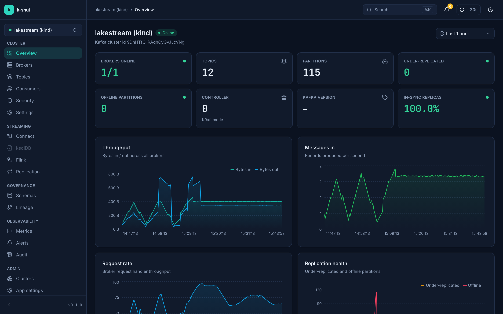
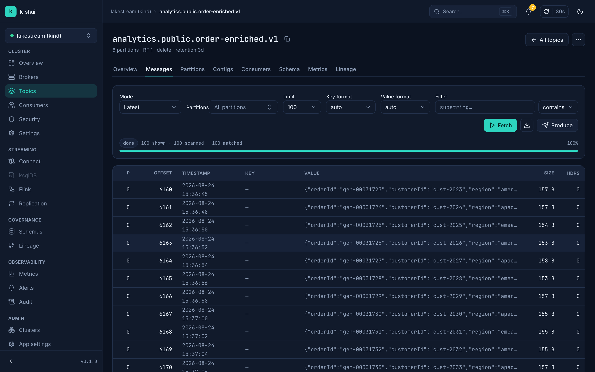
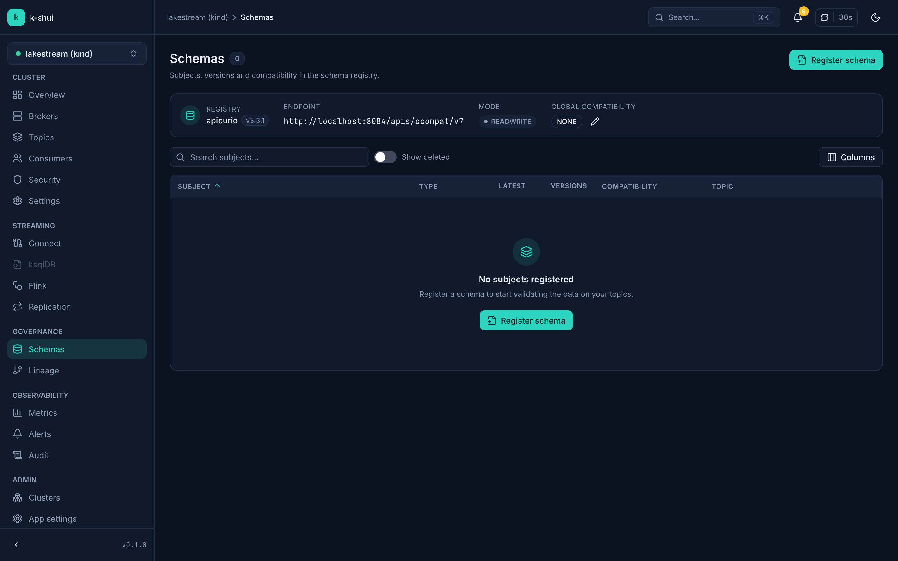
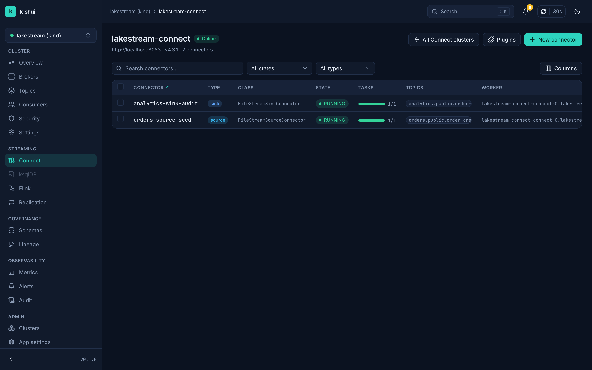
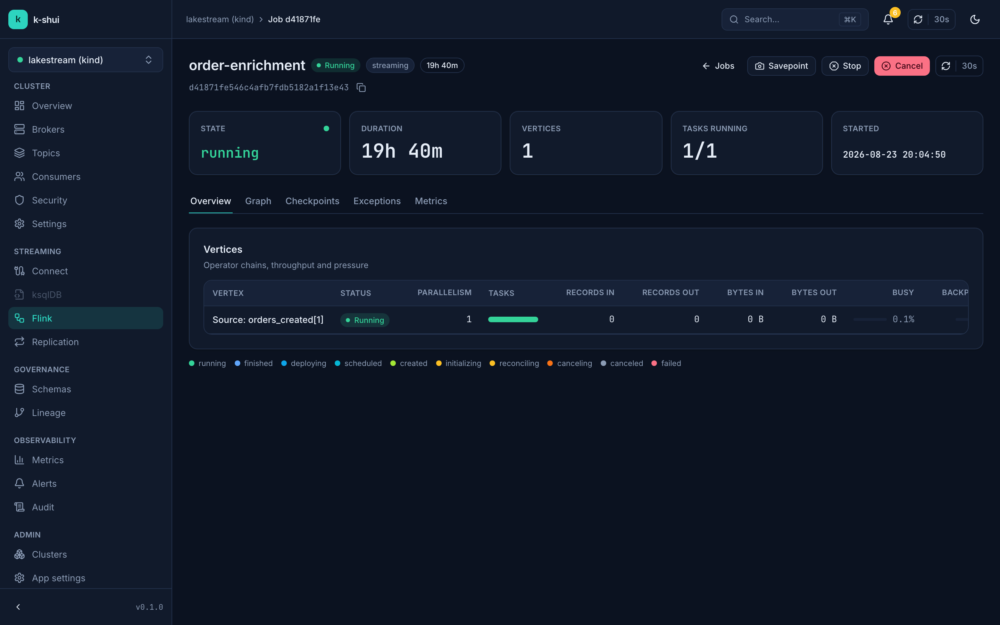
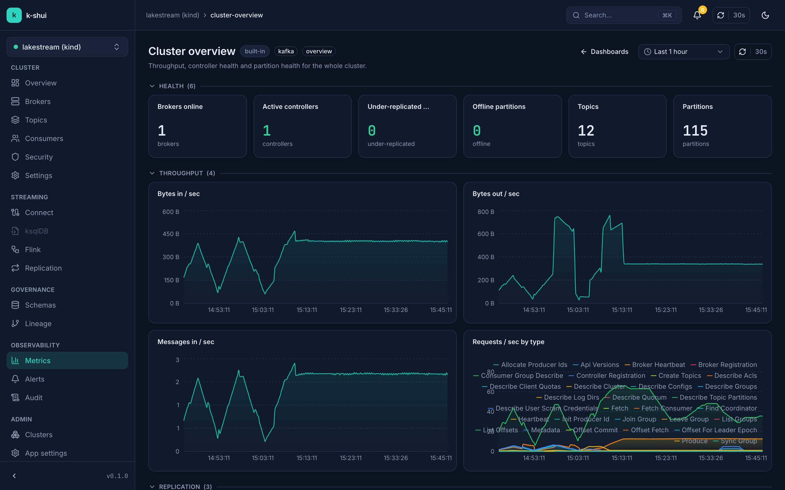
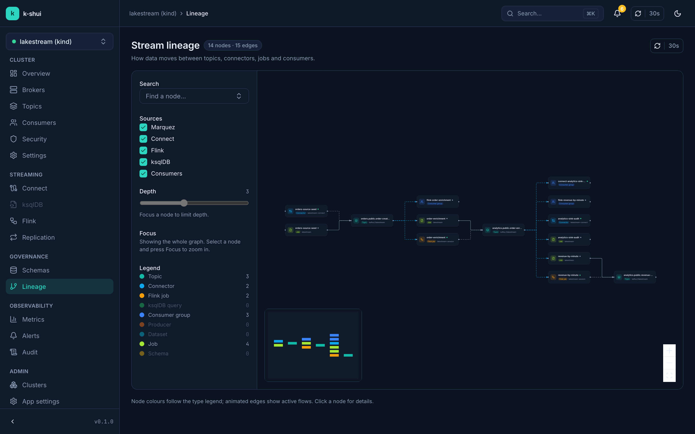

Topics & partitions
Create, configure, and delete topics; add partitions, purge, clone, and diff configs across clusters.
Open source · Apache-2.0
One UI for your whole streaming stack — topics, consumer groups, messages, schemas, Kafka Connect, ksqlDB, Flink, metrics, lineage, and alerts. No tab farm. No license gate.
uvx k-shui serve

Works with your stack
Features
One application, one auth model, one command to start it — instead of five tools welded together.
Create, configure, and delete topics; add partitions, purge, clone, and diff configs across clusters.
Live tail over SSE or paged fetch, produce messages, decode JSON / Avro / Protobuf / JSON Schema, filter by JSONPath or regex, export CSV/NDJSON.
Lag per partition, members and assignments, offset resets to earliest / latest / timestamp / shift — plus Kafka 4.x share groups.
Confluent, Apicurio, and Karapace: browse subjects and versions, diff schemas, and run compatibility checks.
Connector CRUD with a guided creation wizard, pause / resume / restart, task status, plugin validation, and a MirrorMaker2 replication view.
ksqlDB SQL editor with streaming results; Flink jobs, checkpoints, execution graphs, jar upload/run, and SQL Gateway.
Prometheus-backed dashboards with Grafana-JSON import, a PromQL explorer, and a zero-dependency sampled fallback.
OpenLineage / Marquez graph on an interactive canvas, enriched with edges derived from Connect, ksqlDB, Flink, and consumer groups.
Metric-based triggers with buffered conditions, delivered to email, Slack, PagerDuty, Teams, or webhooks — with full history.
Screenshots
A single design system across the whole streaming surface — light and dark, WCAG AA, keyboard-first.






Deploy
All four run the same application. Then open http://localhost:8090 — with no config, k-shui points at localhost:9092.
No local Python install needed — uv resolves and runs the PyPI package.
uvx k-shui serveNo Node or Python dependencies to manage — the launcher wraps uv, pipx, or Docker.
npx k-shui serveSingle container from GitHub Container Registry; point it at your bootstrap servers.
docker run -p 8090:8090 \
-e KSHUI_BOOTSTRAP_SERVERS=host.docker.internal:9092 \
ghcr.io/thadchas/k-shuiOCI chart for Kubernetes — Kustomize overlays are available too.
helm install k-shui \
oci://ghcr.io/thadchas/charts/k-shuiOpen source
No paid tiers, no feature gates, no phone-home. Star the repo, file issues, or send a PR — contributions are welcome.